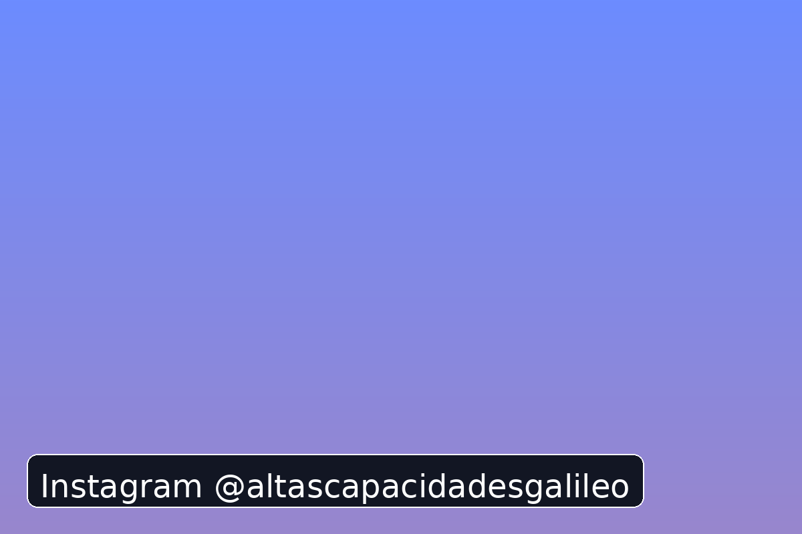
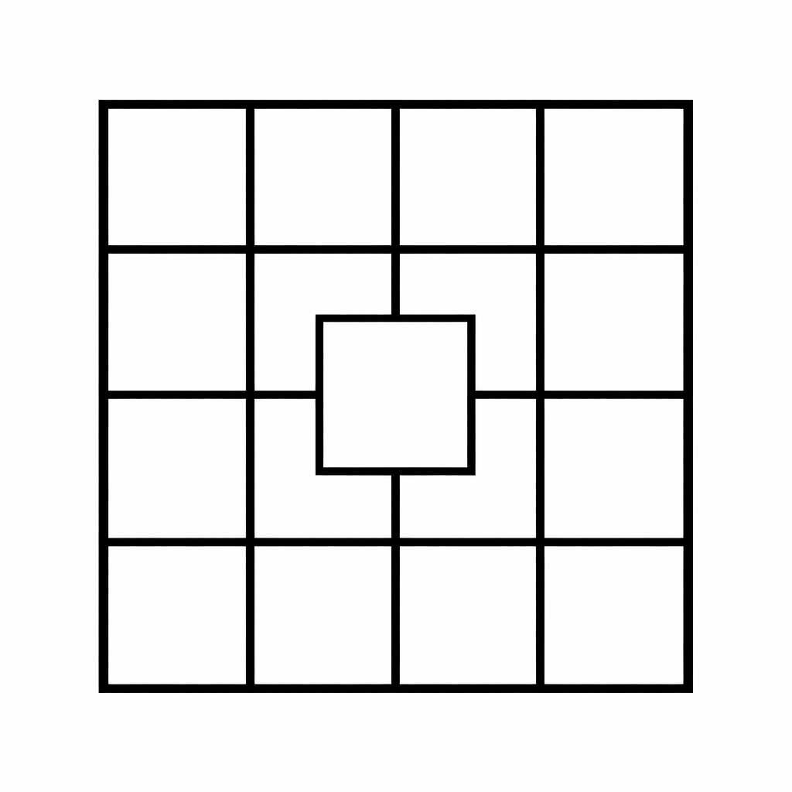

Detección y orientación
Información clara para identificar necesidades y coordinar recursos con el centro educativo.
Las altas capacidades no son solo inteligencia. Son curiosidad, pensamiento profundo y una sensibilidad especial hacia el mundo. En la Asociación Galileo acompañamos a niños y familias para que ese talento crezca con equilibrio: creatividad, conocimiento y bienestar emocional.
Descubre nuestras actividades y retos en Instagram

Las altas capacidades describen un potencial de aprendizaje y rendimiento significativamente superior a la media. No son solo cociente intelectual: incluyen creatividad, motivación, capacidad de resolución de problemas y sensibilidad hacia el entorno.
Información clara para identificar necesidades y coordinar recursos con el centro educativo.
Actividades temáticas (STEAM, literatura, debate, creatividad, pensamiento crítico) diseñadas para el disfrute y el reto cognitivo.
Espacios para compartir experiencias, crear vínculos y aprender en compañía.
Una programación viva que combina talleres presenciales, proyectos de investigación, divulgación científica y encuentros familiares.
Sesiones de aprendizaje basado en proyectos para experimentar, construir y presentar.
Comprensión lectora avanzada, escritura creativa y divulgación.
Diseño, expresión artística y pensamiento visual para potenciar la imaginación.
Robótica, ciencia y programación con foco en curiosidad y resolución de problemas.
Habilidades comunicativas para argumentar, escuchar y aprender en equipo.
Autoconocimiento, convivencia y gestión de la alta sensibilidad.
Somos una asociación dedicada al acompañamiento de niños con altas capacidades y sus familias en la zona de Mancha Centro.
Nuestro objetivo es crear espacios donde estos niños puedan desarrollar su curiosidad, creatividad y sensibilidad en un entorno enriquecedor.
La Asociación Galileo trabaja con familias de niños con altas capacidades en diferentes localidades de la provincia de Ciudad Real y la comarca de Mancha Centro.
Realizamos actividades, talleres y acompañamiento educativo para familias de:
Nuestro objetivo es ofrecer un espacio donde los niños con altas capacidades puedan desarrollar su curiosidad, creatividad y pensamiento crítico en un entorno enriquecedor.
Muchos de estos niños hacen preguntas profundas, buscan comprender cómo funciona el mundo y muestran una gran sensibilidad hacia las personas y su entorno.
Preguntas constantes y deseo de comprender el porqué de las cosas.
Capacidad para generar ideas originales y conectar conceptos diferentes.
Gran empatía y percepción profunda de las emociones.
No siempre. Muchos alumnos con altas capacidades pueden aburrirse o desmotivarse en la escuela.
También necesitan apoyo educativo y emocional para desarrollar su potencial.
Las altas capacidades también incluyen creatividad, motivación y sensibilidad.
Si te gustan los retos, prueba este pequeño desafío.
¿Cuántos cuadrados puedes encontrar en este dibujo?

Un pequeño desafío para pensar diferente.
Tres interruptores controlan tres bombillas en una habitación cerrada. Solo puedes entrar una vez.
¿Cómo puedes saber qué interruptor corresponde a cada bombilla?
Preferimos el canal directo por Instagram: @altascapacidadesgalileo. Te responderemos lo antes posible.
Sí, colaboramos con equipos docentes y orientadores para ajustar medidas y enriquecer el currículo.
Diseñamos grupos por etapas y nivel de reto para asegurar bienestar y aprendizaje significativo.
Escríbenos por Instagram y te contamos cómo participar o colaborar.
Contactar por Instagram